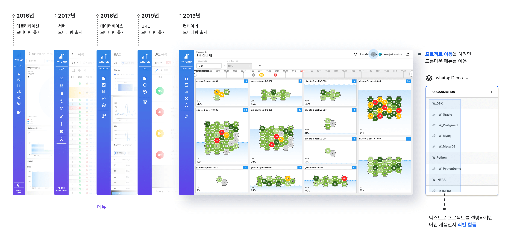
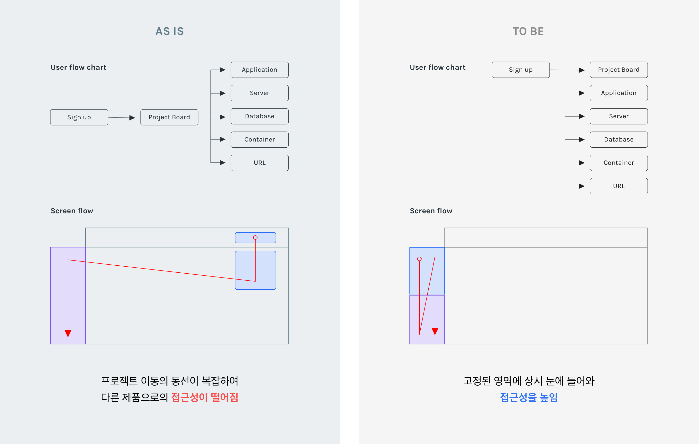
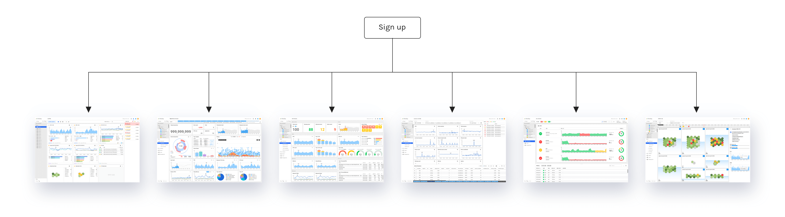
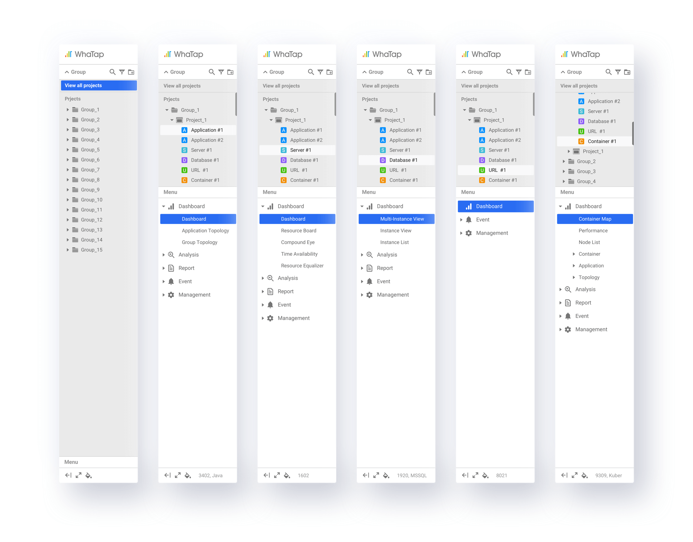
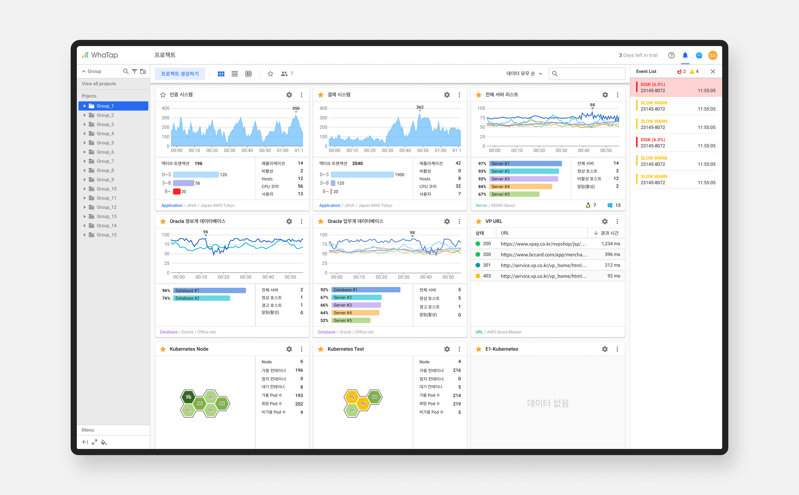

와탭은 기업의 IT 서비스를 안정적으로 운영할 수 있도록 도움을 주는
서비스입니다. 기업에서 고객과 주고 받는 데이터를 저장하는 서버의
자원을 분석하여, 실시간 데이터 차트와 로그 등을 분석하여 문제점을
사전에 알아차릴 수 있도록 해주는 모니터링 솔루션입니다. 기존과
다른 차별점이 있다면 SaaS 기반의 솔루션이어서 고객의 서버에 현장
방문하여 설치하는 방식이 아니라 고객이 원하면 언제든지 직접 설치할
수 있는 간편한 클라우드형 서비스입니다.
Problem
와탭 서비스 안에는 애플리케이션 모니터링과 서버 모니터링 제품을
2가지를 운영하고 있었습니다. 와탭의 비전을 설명드리자면, IT 통합
모니터링 서비스를 와탭 안에서 원스톱으로 한번에 모두 해결할 수
있도록 하는 것입니다. 그래서 신규 제품들인 데이터베이스, URL,
컨테이너의 모니터링 서비스들이 와탭 안에 우후죽순으로 늘어나게
되었습니다. 그러나 여기서의 문제점은 기존 제품이 단독 제품처럼
네비게이션을 갖고 있어 다른 제품으로의 이동 동선이 복잡하다는
것이었습니다.

Goal
"다른 프로젝트로의 동선을 최소화하기 위해 통합 네비게이션 바를
만들어 항상 접근이 용이하도록 하자."
Design Concept
통합 모니터링을 쉽게 할 수 있도록 최초 진입 설정부터 제품 안에서의
활동까지 겸할 수 있는 짧은 사용자 흐름과 화면 내의 동선까지
최소화하는 것을 목표로 설정하였습니다.


Navigation
프로젝트와 메뉴의 위계를 설정하여 프로젝트를 상단에, 메뉴를 하단에
두어 프로젝트 선택에 따라 해당하는 메뉴가 유연하게 바뀌도록
디자인을 설계하였습니다.

Product Pages

로그인 후, 처음으로 보이는 프로젝트 보드는 자신이 등록한 모든
프로젝트의 주요 정보들을 볼 수 있는 화면입니다.